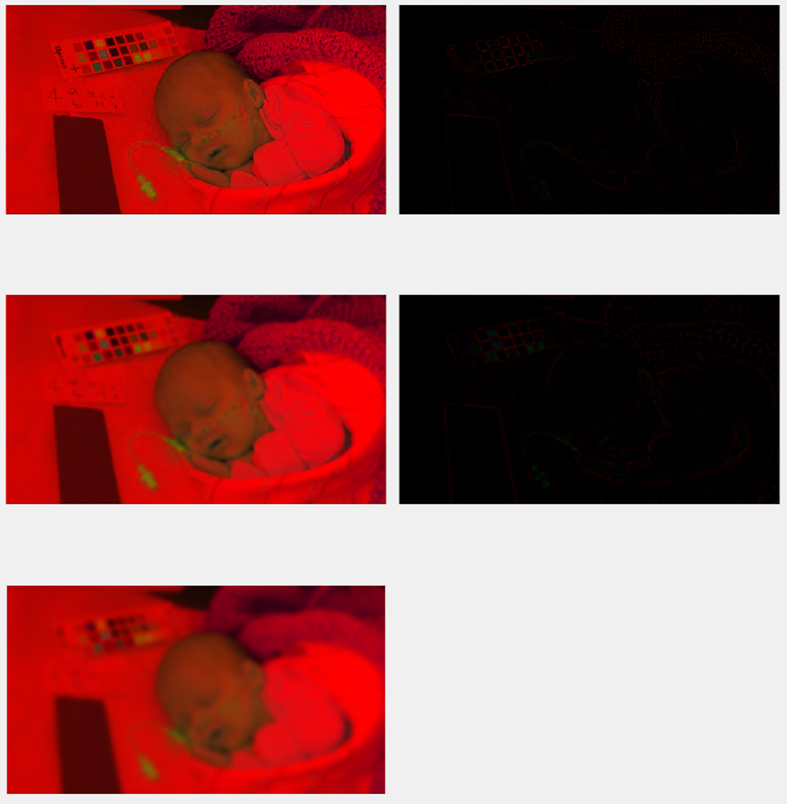
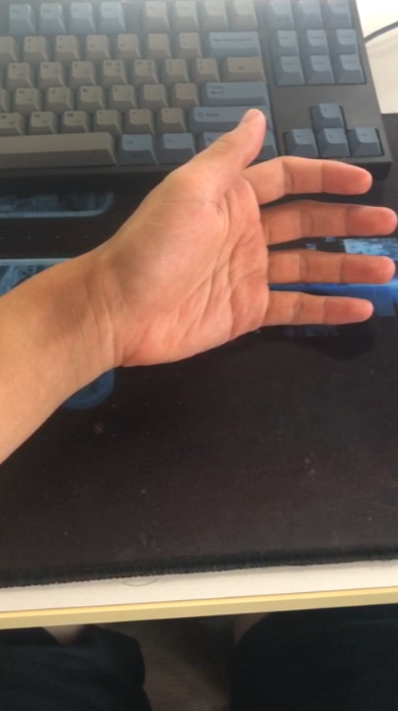

IIT6028 HA#2 Computational Photography LATE DAY: 3
Eulerian Video Magnification
1. INITIALS AND COLOR TRANSFORMATION
load the video, extract its frames, convert to double-precision, and convert to YIQ from RGB
Using video_to_frame_list function.
Load the video file using VideoReader function, extract its frame using readFrame function.
And convert each of the frames to the YIQ color space using rgb2ntsc function.
[1 2] 1: frame #1 original / 2: frame #1 converted to YIQ
YIQ in WIKIPEDIA
In YIQ color space, Y component represents the luma information, and is the only component used by black-and-white television recievers.
I and Q represent the chrominance information.
So I just focused on Y component in this project.
Total required time: 180s
It takes quite a lot of time. Because we have to apply all processes in every frames.
So I saved frame_list, Fs, height, width, ch, and frame_number as .mat file and loaded it for test.
2. LAPLACIAN PYRAMID
Using get_laplacian_pyramid function.
get_laplacian_pyramid function gets image_original, and it apply gaussian filter on it, to generate image_blurred.
When applying gaussan filter, I set gaussian_stdev as 2.
Then calculate image_residual as image_origianl - image_blurred.
I made it as function to repeat this process easily.
I didn't used built-in function, likes impyramid.
We can easily figure out image_gaussian_N is 2^N smaller then original image.
And image_residual_N is 2^N smaller then original image.
So each cycle, we generate image_gaussian_N+1 and image_residual_N from image_guassian_N.
In this project, I applied laplacian pyramid 4 times, so generated guassian_1, guassian_2, gaussian_3, gaussian_4, residual_0, residual_1, residual_2, residual_3.
You can check it by following image. All results are matched with size of original frame, using imresize function in matlab.
In that image, their are only 2 times of laplacian pyramid.
imresize function uses bicubic interpolation to upsample it.

[1 4 / 2 5 / 3 -] 1: frame_original / 2: gaussian_1(*2) / 3: gaussain_2(*4) / 4: residual_0 / 5: residual_1(*2)
And we can reconstruct original image from low level of gaussian & residual images using laplacian_up function.
In this function, We can reconstruct image_reconstruct_N from image_gaussian_N+1 and image_residual_N.
Just generate image_gaussian_up from upsampling image_gaussian_N+1 using imresize function.
And add image_gaussian_up and image_residual_N for generate image_reconstruct.
We can check original image and reconstructed image by laplacian pyramid is almost same.
In this project, we use temporal data, so we have to create cube using get_cube function.
cube is array of gaussian/residual images by each frame.
I generate cube for gaussian & residual images by using get_cube function. It means temporal set of images.
I used get_laplacian_pyramid function for each frame of this video, and save them as array.
3. TEMPORAL FILTERING
In this process, we find best filter for the fft of this cube.
To figure out frequncy elements of this signal, we make cube_pixel, which is made by temporal vector of cube on the exactly same position.
We calculate fft of that vector for each pixel, and calculate sum of them. We call it cube_fft.

sum of cube_pixel's fft. It's also mean cube_fft
We can easily figure out which parts we have to increase. In this case, we have to increase that pick in near by 1Hz.

visualization of butterworthBandpassFilter
This is plot of given butterworthBandpassFilter. We know it's interest frequncy is 0.83Hz - 1Hz. It is similar with peak of cube_fft.

butterworthBandpassFilter + cube_fft in one plot
This image represents butterworthBandpassFilter and cube_fft in one time. We can easily figure out that peak is almost same.
So for baby2.mp4, this filter will be most suitable one.
4. EXTRACTING THE FREQUENCY BAND OF INTEREST
We apply designed filter on each cubes which made by get_cube function.
I implemented filter_cube function for it.
In this function, we create cube_pixel. It is 1 dim array, and it is temporal data of values in the same position pixels.
I created Hd_fft using freqz function.
Then, I applied fft on cube_pixel to apply filter, generate cube_pixel_fft.
And multiply Hd_fft on it to apply that filter, and apply ifft to re-convert to original domain.
Also, we apply abs on the result of ifft.
All of this procedures are applied for only first channel of cube, and after it, we have to insert that 1 dim array to cube, and create cube_filtered.
I manage memory using clear function. I cleared Hd, which for filter, to manage memory.
5. IMAGE RECONSTRUCTION
In this process, we reconstruct new sequence of video using filtered cubes.
We have to extract image from cube, for every frame. Then sum them with weighted value, alpha.
We can apply different values of alpha for every cube. But in this project, I set them same.
So we sum all gaussian & residual images with multiplication alpha, and then finally sum with original frame sequence, frame_list.
And also we used imresize function for this process.
Finally, we combine array of channel 1 - reconstructed one, and array of channel 2, 3 - same with origianl frame sequnce.
And last we have to save that reconstructed frame sequence as video. We can use make_avi function.
In that function, we use VideoWriter to convert sequnce to video, and apply imadjust and stretchlim function to apply suitable range for it.
At last, we convert each cube_frame color set to RGB from YIQ, so we have to use ntsc2rgb function.
We can check result is quite good. We can much better on figure out baby's breating. You can check it on baby2_0.83_1_100.avi.
face.mp4
And let's see about face.mp4.

cube_fft of face.mp4
In this plot, we can see there are some peaks. First one is near by 0.5Hz, and second one is near by 1Hz.
So I designed a lot of butterworthBandpassFilter to focus on 0.5Hz between 1Hz to find best filter.
We can see little difference of face color, and motion.
I think face_0.8_1_200.avi is best.
6. EXTRA CREDIT: CAPTURE AND MOTION-MAGNIFY YOUR OWN VIDEO(S)
And let's see about hand.mp4. I recorded my hand myself.

capture of hand.mp4
I took a video to amplify motion of my hand.
This is a random frame of hand.mp4. Let's check it's fft plot.

cube_fft of hand.mp4
We can check peaks of cube_fft. So I tested many kinds of filters.
If you see result video, you will can check some problems. I think its because color system of cellular phone.
But it have not a bad effect on motion amplifying, so I didn't solved it.
You can check full matlab codes in GitHub Repo.
Copyright 2018. PJunhyuk. All rights reserved.